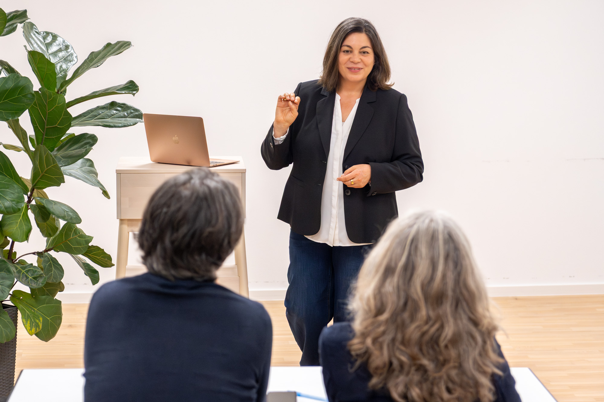
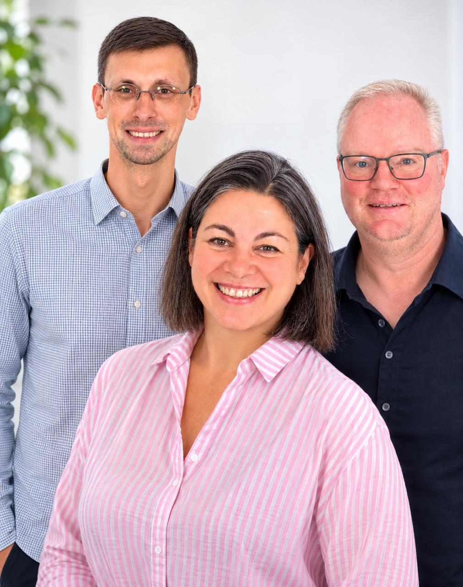

Komplexes muss anwendbar werden.
Wir erklären Themen so, dass Menschen sie nachvollziehen und in ihrem Alltag nutzen können.
Wir verbinden verständliche Wissensvermittlung mit Lernstrategie, persönlicher Weiterentwicklung und einem klaren Blick auf neue Zukunftsthemen.

Entwicklung funktioniert nicht über Druck, sondern über Klarheit, Struktur, Übung und passende Herausforderungen. Wir wollen Menschen nicht abhängig von Begleitung machen, sondern ihnen Werkzeuge geben, die sie selbst einsetzen können.
Rein Campus ist kein anonymes Lernportal. Hinter den Angeboten stehen Menschen, die seit vielen Jahren mit Schülern, Erwachsenen und Gruppen arbeiten und dabei immer dieselbe Frage verfolgen: Was hilft im Alltag wirklich weiter?
Unsere Stärke liegt in verständlicher Wissensvermittlung, Lernbegleitung, innerer Klarheit und praxisnaher Weiterbildung. Wir arbeiten dort, wo wir fachlich etwas beitragen können – und benennen offen, wo andere Fachstellen die besseren Ansprechpartner sind.
Persönlich kennenlernen →
Wir erklären Themen so, dass Menschen sie nachvollziehen und in ihrem Alltag nutzen können.
Methoden und Werkzeuge sollen auch dann funktionieren, wenn gerade keine Begleitung oder kein Trainer danebensteht.
Lernkompetenz, geistige Beweglichkeit und KI-Kompetenz gehören für uns zunehmend zusammen.
Bevor Sie sich entscheiden: So erkennen Sie, ob Rein Campus zu Ihrer Situation passt – und wo unsere Grenzen liegen.

Wir schaffen einen klaren Rahmen, erklären Zusammenhänge und trainieren konkrete Fähigkeiten. Was wir nicht können oder nicht leisten, benennen wir offen.
Wir sagen klar, was wir anbieten, wo unsere Grenzen liegen und welches Format zu Ihrer Situation passen kann.